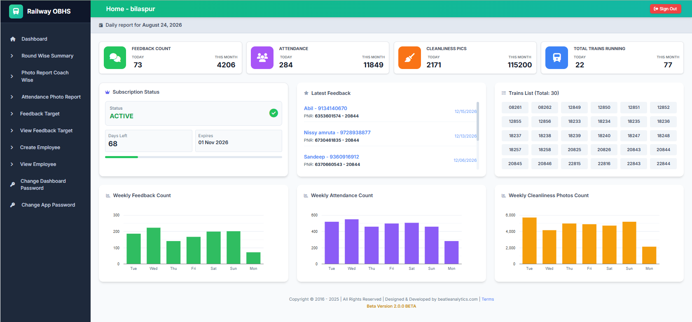

Real-time Overview at a Glance
This is the actual Railway OBHS dashboard used to monitor feedback, attendance, cleanliness photos, train activity and operational trends.

This is the actual Railway OBHS dashboard used to monitor feedback, attendance, cleanliness photos, train activity and operational trends.
